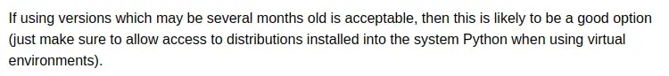
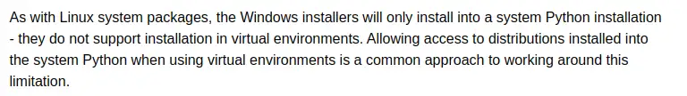
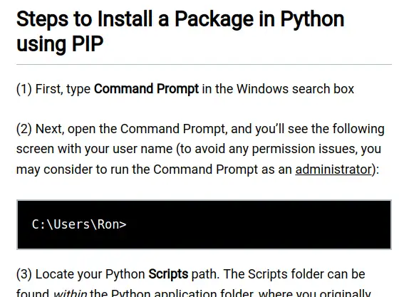
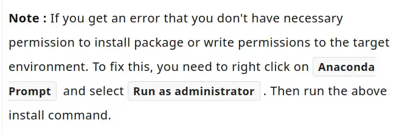
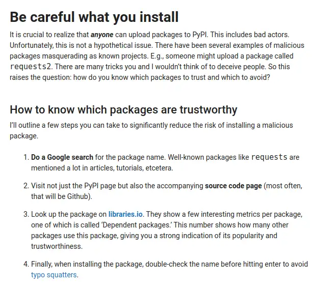

Irresponsible Expertise - Python Packages
Are we experts teaching safe computing? Or are we empowering the less-experienced without informing about the risks and responsibilities? I suspected the latter but had no evidence to back it up. I've tried to run a quick experiment as impartially as I can to see what the evidence suggests.
Part of an exploration of supply chain security.
Before I start, in case it wasn't obvious: The views and opinions expressed in this blog are solely those of the author. They do not necessarily reflect the views of my employer, clients or other associates.
The Python Ecosystem¶
For this experiment, I'm going to focus on Python experts and a risk-laden question that a beginner Pythonista will ask early in their journey - how do I install a package in Python?
Why Python? It's the main ecosystem I've been working in for the past few years. I think it's also particularly interesting because of the diverse community - not just folks who think of themselves as professional software developers, but data engineers, data scientists, analysts and hobbyists. That diversity is awesome but carries great responsibility for those who teach.
The Python ecosystem also has what I believe is an uncommon feature in its package management system. In most package managers, installing a package just makes it available for use in your code. In Python, a package can choose to execute arbitrary code as part of its install process. According to security testing vendor checkmarx.com:
Automatic code execution is triggered upon downloading approximately one-third of the packages on PyPI.
When executing the well-known “pip install
” command, users may expect code to be run on their machine as part of the installation process.
Is there really a threat to a Python developer? Yes. One well-documented example from 2022 is the W4SP stealer, discovered in 2022. What does this thing do when you install it?
enumerates the victim's system, steals browser-stored passwords, targets cryptocurrency wallets, and searches for interesting files using keywords, such as 'bank' and 'secret'
When the linked article was published shortly after the discovery of the malware, packages known to contain this malware had been installed 5,700 times. That's up to 5,700 opportunities worldwide that this malicious software had to steal someone's stuff.
It's not an isolated case. This 2023 article from Sonatype enumerates eight more pieces of similar malware.
The Experiment¶
I'm going to fire a query "install Python package" at Google in an incognito Chrome window in a minute. The query date was 2024-03-07. I'll then look at the top five results, whatever they are, and assess the content for how well they warn readers of the risks. Note that the results and content when you read this may differ from mine at the time of writing.
My hypothesis driving this post is that:
The articles explaining how to install Python packages that an inexperienced user is most likely to see put them at risk by explaining how to run dangerous software on their computers without explaining the risks.
Assessment¶
If I get a result that explicitly targets more advanced users who I'd expect to understand the risks, I'll highlight that and move on. Otherwise, I'll assess against this set of criteria I've chosen to indicate whether I believe that the risk to the audience is increased or reduced by the article content, from worst to best.
 I think the article encourages bad practice
I think the article encourages bad practice I think the article does not inform of risks
I think the article does not inform of risks I think the article informs of risks
I think the article informs of risks I think the article informs of risks and presents good advice
I think the article informs of risks and presents good advice
I'll look for some specific topics that an article might mention to inform the audience of real risks for a fairer comparison:
- malicious packages exist
- simply installing a package carries risk
- typosquatting is an attack vector (example)
- how to assess trustworthiness for a package
- trustworthy packages can become malicious in later versions
- use of vulnerability scanning tools
- avoiding installation in the system python
Ready? Let's go.
1. Python Packaging User Guide¶
Rating: in my opinion, this article does not inform of risks
https://packaging.python.org/en/latest/tutorials/installing-packages
Number one on the search results? Official documentation. Opening with detailed instructions to execute Python at the command line, this official Python documentation explicitly invites "newcomers" to participate.
Despite thousands of words dedicated to working around the system security constraints that might trip the audience up on their way to download untrusted software from the internet, I can't see any evidence that the article says anything about why those constraints are there and how they might be protecting you, and nothing on the other risks I'm looking for. It only mentions avoiding installation in the system Python.
2. Python Documentation¶
Rating: in my opinion, the article encourages bad practice
https://docs.python.org/3/installing/index.html
Number two is more official Python documentation. Instructions for using venv avoid calling out the security-related risks around installing in the system Python installation. The last section on "installing binary extensions" implies the capability of installation to execute code but it doesn't call it out and links to Installing Scientific Packages which encourages using old versions:
{kind=link}

Later in the same document, advice to install to system Python for installers that require building from source and don't support virtual environments:
{kind=link}

Because the search result links out to a document that encourages compiling from source and installing into the system Python, does not warn of any risks and explicitly targets scientists, I'm grading this documentation as encouraging bad practice.
3. Data to Fish¶
https://datatofish.com/install-package-python-using-pip/
Rating: in my opinion, the article encourages bad practice
OK, so we open with:
{kind=link}

Running software unnecessarily with admin rights maximises the damage a mistake can cause. Microsoft put a bit of effort into encouraging the opposite behaviour. What I really dislike about this kind of thoughtless "just run it as admin" is that it encourages behaviour that becomes very dangerous when the user takes that learned behaviour back to work on servers and multi-user systems, potentially compromising an entire organisation. Wow. The rest of the article continues in a similar cargo-cult-encouraging vein of click X, type Y with little explanation and no warnings - it's very short.
4. ListenData¶
https://www.listendata.com/2019/04/install-python-package.html
Rating: in my opinion, the article encourages bad practice
Same again, for example:
{kind=link}

5. Python Land¶
https://python.land/virtual-environments/installing-packages-with-pip
Rating: in my opinion, the article informs of risks and presents good advice
OK, Number five. What horrors do you have in store?
You know what? I think this one is rather good. It beats the official documentation and may well be the most responsible instructional article I've seen recently. It highlights risks and offers what I think is good advice on three of my topics: typosquatting is an attack vector, how to assess trustworthiness for a package and avoiding installation in the system python.
Here's an example.
{kind=link}

Summary¶
I think it's fair to say my hypothesis largely holds, and that the top search results an inexperienced user is likely to see when they search for how to install a Python package, will help them do that in a manner that is poorly informed or dangerous.
Kudos to python.land, being the exception.
To reiterate what I said up front - I'm picking on Python specifically because of my personal experience, the user-friendly reputation, the non-developer user base, along with the potential for simply installing a package to initiate an attack. I'm confident that the same empowering-without-informing approach is common across the industry, but that is a very broad statement!
Having worked with folks in the data space at all career stages of Python development from first contact to a decade in, I'm confident that this issue is real. These are risks you are exposed to from the first time you install a Python package, and there's little reason to expect someone would become aware of these issues as they transition to professional. Unless something bad happens to you, and you somehow know that it was that Python package that caused it, what would prompt you to go looking for the info?
I know there's a noble thing we're doing about trying to be as inclusive as possible but neglecting to inform people of the risks they are exposed to feels wrong. To me, it feels a bit like cigarette advertising back in the day (although, I think and hope, well-intentioned rather than malicious).
Get a great buzz! (Don't mention the health risks)
From here, I'll think about what I can do to have a more positive outcome for this work.